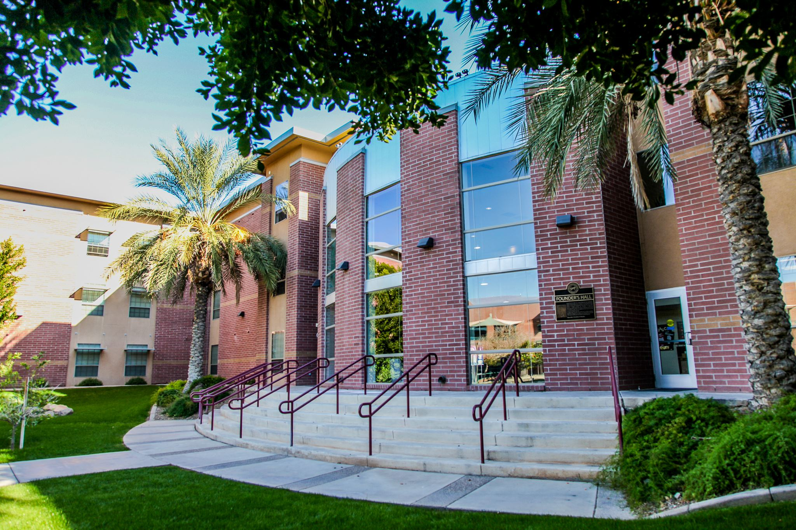

About Ian Sbar

My name is Ian Sbar, a UAT student aiming to get a dual major in Digital maker and Fabrication / Robotics and Embedded systems. Having always enjoyed putting things together as a kid, the last 3 years of UAT learning Robotics and Digital Maker has allowed me to create things I could only dream of, such as my own custom game controller and customizable storage box. I also enjoy playing video games, being a huge fan of fighting games specifically
Education

As stated above, I am planning to earn two bachelor of Science degrees in Digital maker and Fabrication / Robotics and Embedded systems. I am currently attending the University of Advancing Technology at Tempe, Arizona and I am on my last semester before graduating.